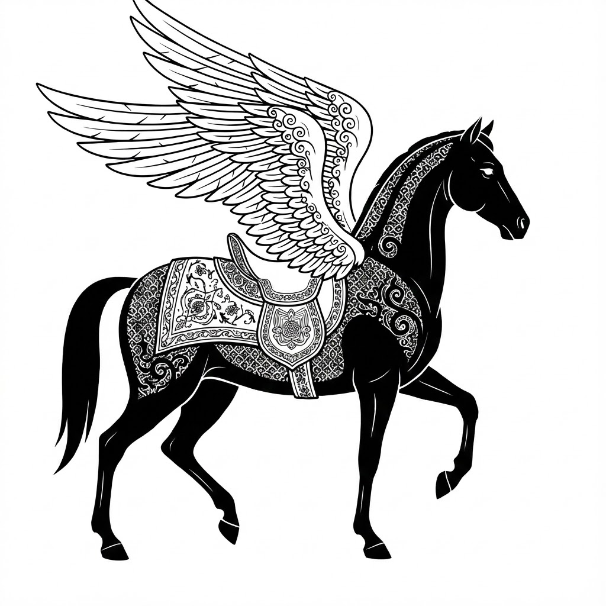

THE LIQUID FORTRESS
A Structural History of the Persian Mind

Chapter 1: The Fortress and the Corridor
Roots & Geometry
Chapter 2: The Lens of FRC
Methodology
Chapter 3: The First Binary
Asha & Druj
Chapter 4: The Myth of the Border
Arash & Sacrifice
Chapter 5: The Thermodynamics of Truth
Truth as Physics
Chapter 6: The Imperial Architecture
Cyrus & Darius
Chapter 7: The Parthian Bridge
The Resilience of the Network
Chapter 8: The Sasanian Codex
Structure & Orthodoxy
Chapter 9: The Liturgy of Light
Fire & Ritual
Chapter 10: The Manichaean Error
Mani & The Virus
Chapter 11: The Shock of Conquest
Qadisiyah & The System Crash
Chapter 12: The Mother Tongue
Silence & The Nursery Protocol
Chapter 13: The Master of Logos
Ibn Sina & Logic
Chapter 14: The Mathematicians
Biruni & Khayyam
Chapter 15: The Crisis of Reason
Ghazali & The Gap
PROLOGUE & INTRODUCTION
Prologue: The Riderless Horse
The Legend of Shabrang
Introduction: The Physics of Survival
Entropy vs Coherence & The 7 Floors
PART I: THE SPARK
Chapter 16: The Architect of Light
Suhrawardi & The Imaginal
Chapter 17: The Physics of Angels
Attractors & Guardians
Chapter 18: The Bridge of Gnosis
Head & Heart Integration
PART V: THE FORTRESS
Chapter 19: The Great Nigredo
Mongols & The Void
Chapter 20: The Apron and the Flag
Kaveh & The Roots
Chapter 21: The Rolling Pumpkin
Grandmother Algorithm & Survival
Chapter 22: The Conference of the Birds
Attar & The Collective Self
Chapter 23: The Thermodynamics of Love
Rumi & Hafez
PART VI: THE UNITY
Chapter 24: The Pattern of the World
Safavids & Isfahan
Chapter 25: The Ocean of Being
Mulla Sadra & Flow
Chapter 26: The Perfected State
Isfahan & Stasis
PART VII: THE HORIZON
Chapter 27: The Last Pahlavan
Sattar Khan & The Law
Chapter 28: The Shock of Modernity
Famine & Pahlavi Grid
Chapter 29: The Magnetic Ark
Tehrangeles & Cassettes
Chapter 30: The Digital Simurgh
Diaspora & AI
CONCLUSION & APPENDICES
Conclusion: The Garden in the Fire
Crystal, Stream, Rider
Appendices
Glossary & Archetypes